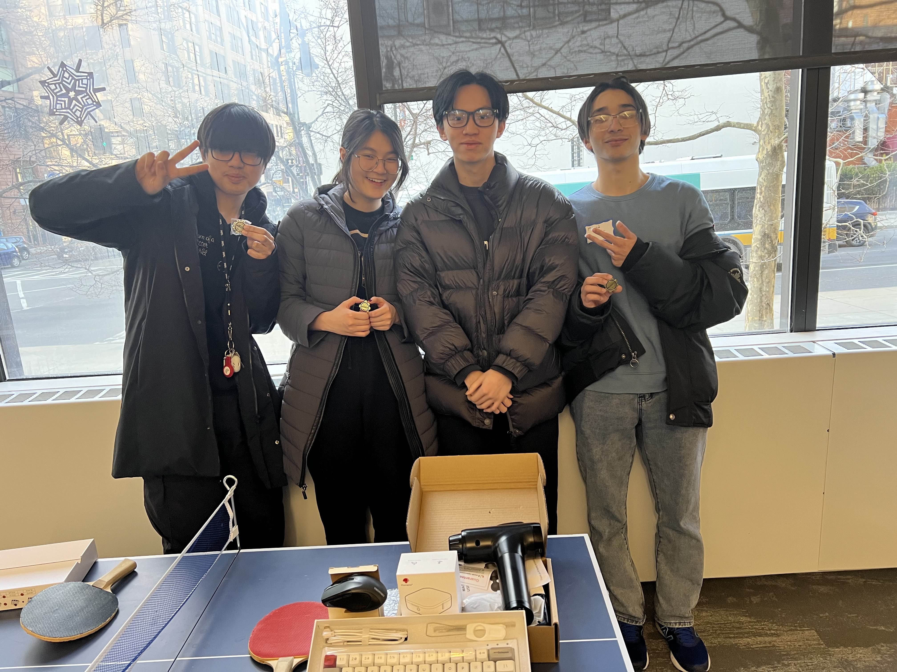

About Me
Computer Science & Physics Major with a Minor in Mathematics, Prev Cloud Intern @ Amazon and Software Engineering Intern @ Dell Technologies
I specialize in:
- Machine Learning & Deep Learning (Regression, Classification, Computer Vision, NLP, Reinforcement Learning)
- High Performance Computing (CUDA, Metal, Clustering, Slurm, Dynamic Binary Instrumentation)
- Cloud Computing (Google Cloud Platform, AWS, Microsoft Azure, Terraform, Hashicorp Lang)
I'm currently learning:
- Sparsity in NVIDIA Architectures for Accelerating Inference
- OCaml and levels of abstractions within compilers
- How to relax and let loose